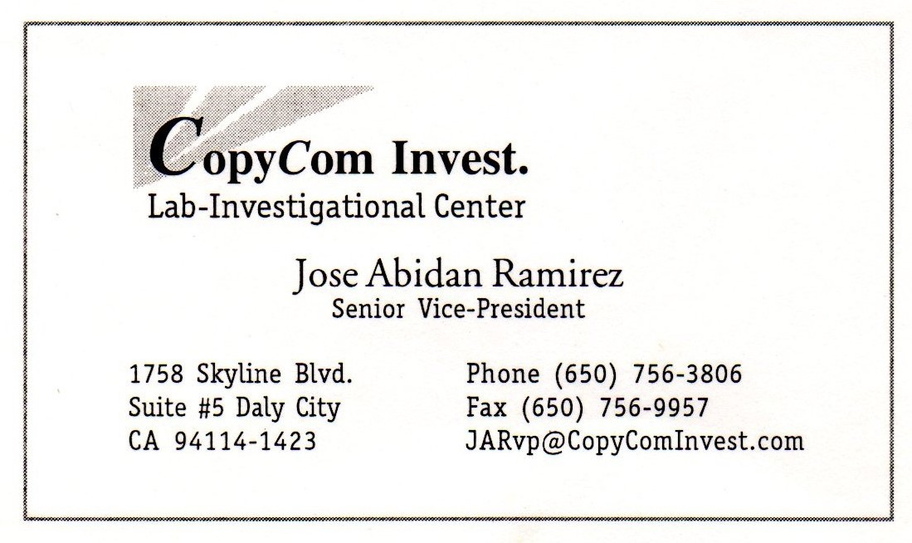

1994: The idea of creating a student own internet cafe was first put together by a group of five "2do Grado de Bachillerato" high school students. The original founders were Roberto C., Noe S., Mirta R. (my younger sister), Luis Enrique (late), and myself.
1995: Copyright holdings, legal ownership, technical and future plans. With the help of our computer class instructors, we continued doing research for funding, operating, and sustaining such endeavour. Each one of the original founders would contribute with time or funds towards the start of the company.
1996-1999: College Hiatus, due to focusing in our personal careers and work, we decided to put our plans on hold until further meetings. In May of 1999 I emigrated to the US., surrended all of my rights to the rest of my colleages.
After a brief reunion with all of the founder members, it was decided that we all shared the intellectual property of CC Corp individually for professional or commercial use. Robert C., has been using it for his IT services. Noe S., uses it occassionally for his graphic design gigs.

2008-2009: My younger sister and I decided to open our first internet cafe in San Salvador, El Salvador. I would take on the funding to purchase equipment and materials
while my sister cared for logistics, local expenses including rent and utilities.